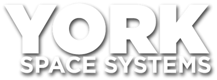
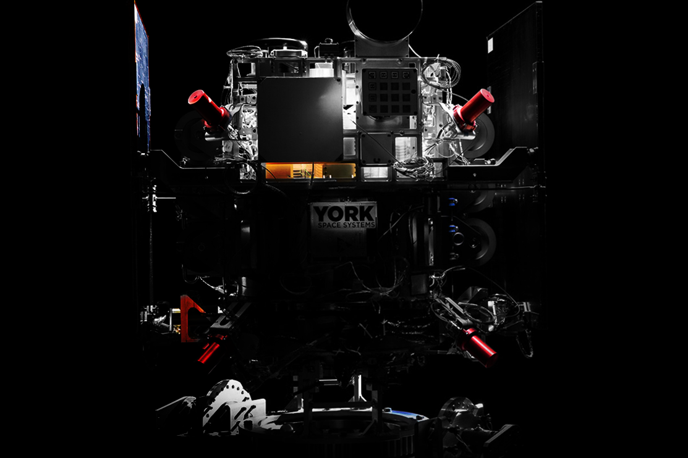

Map operator load
Review non-classified M-MOC/Bastion workflows, telemetry paths, and test gaps with York engineers during week one.

York is scaling spacecraft platforms, M-MOC, Bastion, and secure data routing. The next bottleneck is likely software capacity around telemetry, tasking, tests, and operator load.
Saw the Mission Operations intern and Test Engineering intern signals. Interns help, but fleet growth usually needs senior software pods that can remove manual work without touching classified code.

York's platform story now includes spacecraft, ground services, Mission Control, and APIs.
The hiring signal says York is adding hands for Mission Operations and testing. Your site points to M-MOC, Bastion, secure web tasking, and rapid data delivery. As more spacecraft and ground links come online, manual checks can slow each mission. If tooling lags, senior engineers spend time on repeat work instead of mission growth.
A six-week pilot with weekly demos and a narrow non-classified mission-ops scope.
Review non-classified M-MOC/Bastion workflows, telemetry paths, and test gaps with York engineers during week one.
Build rules and Python services that flag common telemetry states, reduce hand checks, and keep audit trails.
Add Playwright, API, and simulation-backed regression tests around tasking, data delivery, and operator-facing workflows.
Document runbooks, security boundaries, and deployment checks so York keeps control after the pilot ends.
Elinext is a full-cycle software development company, active since 1997. We have about 700 in-house specialists, with no freelancers or subcontractors. For security-sensitive work, ISO 27001 and ISO 9001 give a useful baseline. Our dedicated team model fits a VP Operations need: steady capacity, clear demos, and control. For York, we would keep scope on non-classified ground tools and clear interfaces. That makes the pilot practical while your core team owns mission decisions.

AI-powered network tooling that handles high-volume payloads and reduces operator support load.
Read the case study
Machine data platform that turns raw operational signals into improvement insights for production teams.
Read the case studyDiscuss a small pilot around mission operations tooling.
Contact Elinext